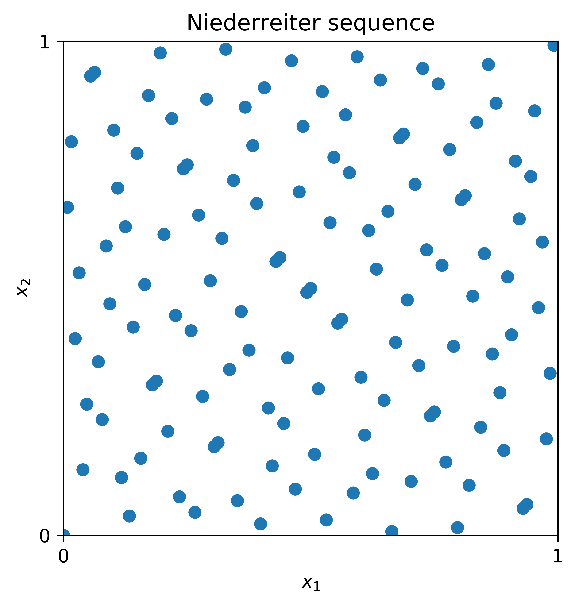
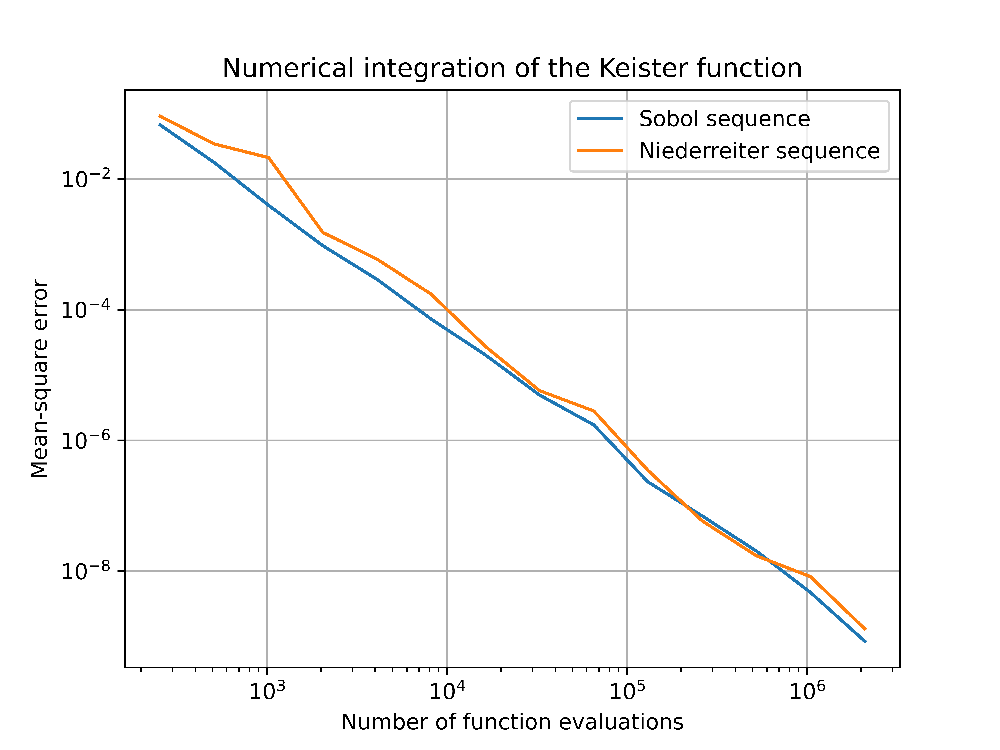
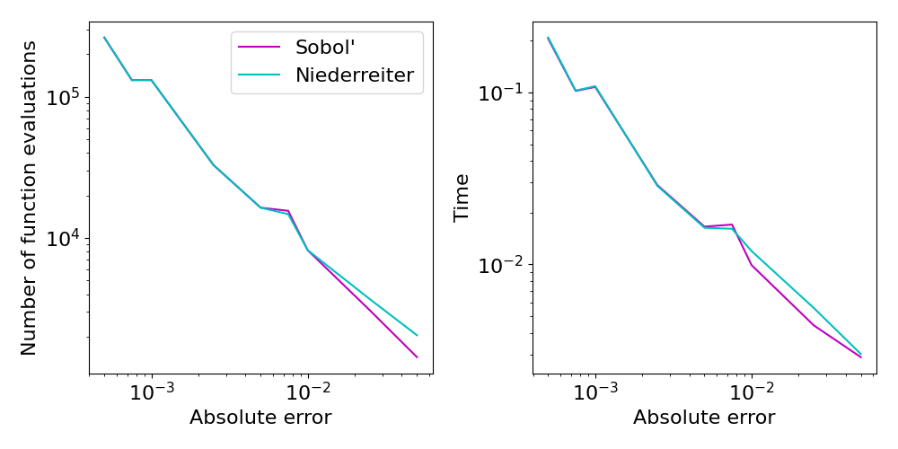

Digital Sequences, the Niederreiter Construction
Adrian Ebert
June 4, 2021
This post explains the digital construction of Niederreiter sequences and compares their QMCPy performance with Sobol' sequences.
The previous blog post on What Makes a Sequence "Low Discrepancy"? introduced the concept of so-called low discrepancy (LD) points. In the literature on QMC methods, there are in general two main families of low discrepancy point sets that are commonly used as integration nodes. These are, on the one hand, lattice point sets, as introduced independently by Korobov and Hlawka, and, on the other hand, digital \((t,m,d)\)-nets and \((t,d)\)-sequences, as introduced by Niederreiter, building up on ideas by Sobol' and Faure. In this post, we will take a closer look at digital nets and sequences. In particular, we will investigate the so-called Niederreiter sequence, as introduced in [4].
Digital Construction Scheme
We introduce the construction scheme of digital \((t,d)\)-nets and sequences. Here, the dimension of the point set is denoted by \(d\) and \(t\) is the so-called quality parameter of the digital sequence or net. The resulting point sets in the unit cube \([0,1]^d\) can, for example, be used for quasi-Monte Carlo integration. For a more detailed overview of digital nets and sequences, we refer to the survey article [1] or the monograph [2].
We will use the following notation. Let \(b\) be prime and let \(\mathbb{Z}_b := \{\overline{0}, \overline{1}, \dots, \overline{b-1}\}\) denote the equivalence classes of integers modulo \(b\). Equipped with addition and multiplication, \(\mathbb{Z}_b\) is a finite field of order \(b\). With a slight abuse of notation, we will identify the elements of the field \(\mathbb{Z}_b\) with the integers \(\{0,1,\ldots,b-1\}\).
Given the matrices \(C_1,\dots,C_d \in \mathbb{Z}_b^{\mathbb{N}\times\mathbb{N}}\) with \(C_j = (c_{j,k,\ell})_{k,\ell \in \mathbb{N}}\), the \(j\)-th component of the \(i\)-th point of the sequence \(S = (\boldsymbol{t}_0,\boldsymbol{t}_1,\dots) \in [0,1]^d\), denoted by \(t_{i,j}\), is then constructed as follows:
-
Write \(i \in \mathbb{N}\) in its base \(b\) representation, that is,
\[ i = (\cdots i_3 i_2 i_1)_b = i_1 + i_2 b + i_3 b^2 + \cdots. \] -
Compute the matrix-vector product
\[ \begin{pmatrix} y_1\\ y_2\\ y_3\\ \vdots \end{pmatrix} = C_j \begin{pmatrix} i_1\\ i_2\\ i_3\\ \vdots \end{pmatrix}, \]where all additions and multiplications are done over the finite field \(\mathbb{Z}_b\).
-
Set the \(j\)-th component of the \(i\)-th point as
\[ t_{i,j} = (0.y_1 y_2 \dots)_b = \frac{y_1}{b} + \frac{y_2}{b^2} + \frac{y_3}{b^3} + \cdots. \]
The resulting sequence \(S = (\boldsymbol{t}_0,\boldsymbol{t}_1,\dots)\) is then called a digital sequence over the finite field \(\mathbb{Z}_b\), and the matrices \(C_1,\dots,C_d\) are called the generating matrices of the digital sequence \(S\).
The Niederreiter Construction
A special instance of digital sequences is the so-called Niederreiter sequence, which was the first known construction yielding \((t,d)\)-sequences for arbitrary dimensions \(d\) and arbitrary prime powers \(b\). The construction method is based on polynomial arithmetic over finite fields as we will illustrate below. Further details can be found in [5] and [2].
Denote the set of polynomials over the finite field \(\mathbb{Z}_b\) by \(\mathbb{Z}_b[x]\). Furthermore, let \(\mathbb{Z}_b((x^{-1}))\) be the field of formal Laurent series over \(\mathbb{Z}_b\). Elements of \(\mathbb{Z}_b((x^{-1}))\) are of the form
where \(w\) is an arbitrary integer and the coefficients \(t_\ell\) are elements of \(\mathbb{Z}_b\). The set of formal Laurent series contains the set \(\mathbb{Z}_b[x]\) as a subset and also permits addition, subtraction, multiplication, and division of formal series.
We summarize the construction scheme for the generating matrices of the Niederreiter sequence, which is based on arithmetic in the field of Laurent series \(\mathbb{Z}_b((x^{-1}))\), below.
-
Let \(p_1,\ldots,p_d \in \mathbb{Z}_b[x]\) be distinct monic irreducible polynomials over \(\mathbb{Z}_b\). For \(1 \le j \le d\), let \(e_j := \deg(p_j)\) be the degree of the polynomial \(p_j\).
-
For integers \(1 \le j \le d\), \(r \ge 1\), and \(0 \le k < e_j\), consider the expansions
\[ \frac{x^k}{p_j(x)^r} = \sum_{\ell = 0}^{\infty} a^{(j)}(r,k,\ell) \, x^{-\ell-1} \]over the field of formal Laurent series \(\mathbb{Z}_b((x^{-1}))\).
-
We then define the entries of the matrix \(C_j = (c_{j,i,\ell})_{i \ge 1,\ell \ge 0}\) as
\[ c_{j,i,\ell} := a^{(j)}(Q+1,k,\ell) \in \mathbb{Z}_b \qquad \text{for } 1 \le j \le d,\; i \ge 1,\; \ell \ge 0, \]where \(i-1 = Q e_j + k\) with integers \(Q=Q(i,j)\) and \(k=k(i,j)\) with \(0 \le k < e_j\).
The digital sequence which is generated by the resulting generating matrices \(C_1,\ldots,C_d\) is called the Niederreiter sequence. In particular, it is a digital \((t,d)\)-sequence over the finite field \(\mathbb{Z}_b\) and the quality parameter \(t\) equals
The \(t\)-value of a digital net or sequence is a quality parameter of uniformity for the corresponding point set. A digital sequence is well distributed if the \(t\)-value is small.
In order to illustrate the structure of the Niederreiter points, we display the first \(128\) points of the sequence in 2 dimensions in Figure 1 below.
{kind=link}

The performance of the Niederreiter sequence in practical applications is, in general, similar to that of the widely used Sobol' sequence. For a more detailed comparison in financial applications, see for example [3].
Niederreiter Points via QMCPy
The Niederreiter sequence has recently been added to the
DiscreteDistribution class of the QMCPy Python library. As a digital
sequence, the Niederreiter sequence is part of the DigitalNet or
Sobol generator and can be accessed by specifying the corresponding
generating matrices. The code in Listing 1 below can be used to draw
randomized points from QMCPy's Niederreiter object.
from qmcpy import DigitalNet
nied = DigitalNet(dimension=5, z_path="niederreiter_mat.20000.32.msb.npy")
x = nied.gen_samples(n_min=0, n_max=4)
x
array([[0.89 , 0.603, 0.288, 0.881, 0.298],
[0.224, 0.063, 0.052, 0.854, 0.387],
[0.707, 0.266, 0.743, 0.739, 0.07 ],
[0.43 , 0.806, 0.98 , 0.527, 0.246]])
Listing 1: Supplying the Niederreiter generating matrices to the digital net generator.
For further details on the construction of the generating matrices of the Niederreiter sequence, we refer the interested reader to the documentation. Additionally, the C++ code which was used to construct the generating matrices can be found here.
Comparison with the Sobol' Sequence
In order to demonstrate the effectiveness of the Niederreiter sequence for numerical integration, we consider its performance for a test function and compare it with the commonly used Sobol' sequence. In particular, we consider the problem of integrating the Keister function with respect to a \(d\)-dimensional Gaussian measure:
where \(\|\cdot\|\) is the Euclidean norm, \(\boldsymbol{I}_d\) is the \(d\)-dimensional identity matrix, and \(\Phi\) denotes the standard normal cumulative distribution function.
The value of \(I(f)\) is then approximated by a QMC rule which uses randomized Sobol' or Niederreiter points as cubature nodes, i.e.,
where
In Figure 2 we display the mean-square error of the approximation \(Q_N(g)\) for different numbers \(N\) of total function evaluations and a dimension of \(d=5\). Here we have computed the exact solution and track the decay of the error as we increase the sample size. For the Keister test function, the numerical results show that the Niederreiter sequence is competitive with the Sobol' sequence as both errors decay at an almost identical rate.
{kind=link}

QMCPy also includes stopping criteria that automatically select the
number of points required to meet an error tolerance. Here it is assumed
that the exact solution is not known and we track the number of samples
required to guarantee an approximation within a user-specified
tolerance. Figure 3 shows similar performance for Niederreiter and
Sobol' sequences when utilized by the CubQMCNetG stopping criterion.
{kind=link}

CubQMCNetG stopping criterion with Niederreiter and Sobol' sequences for the \(d=5\) Keister function.References
- Dick, J., Kuo, F. Y., & Sloan, I. H. High-dimensional integration: The quasi-Monte Carlo way. Acta Numerica, 22, 133-288 (2013).
- Dick, J., & Pillichshammer, F. Digital Nets and Sequences. Cambridge University Press (2010).
- Harase, S. Comparison of Sobol' sequences in financial applications. Monte Carlo Methods and Applications, 25(1), 61-74 (2019).
- Niederreiter, H. Point sets and sequences with small discrepancy. Monatshefte fur Mathematik, 104, 273-337 (1987).
- Niederreiter, H. Random Number Generation and Quasi-Monte Carlo Methods. Number 63 in CBMS-NSF Series in Applied Mathematics. SIAM, Philadelphia (1992).
- Bitbucket repository of Adrian Ebert. https://bitbucket.org/adrian_ebert/qmc-construction-algorithms/.